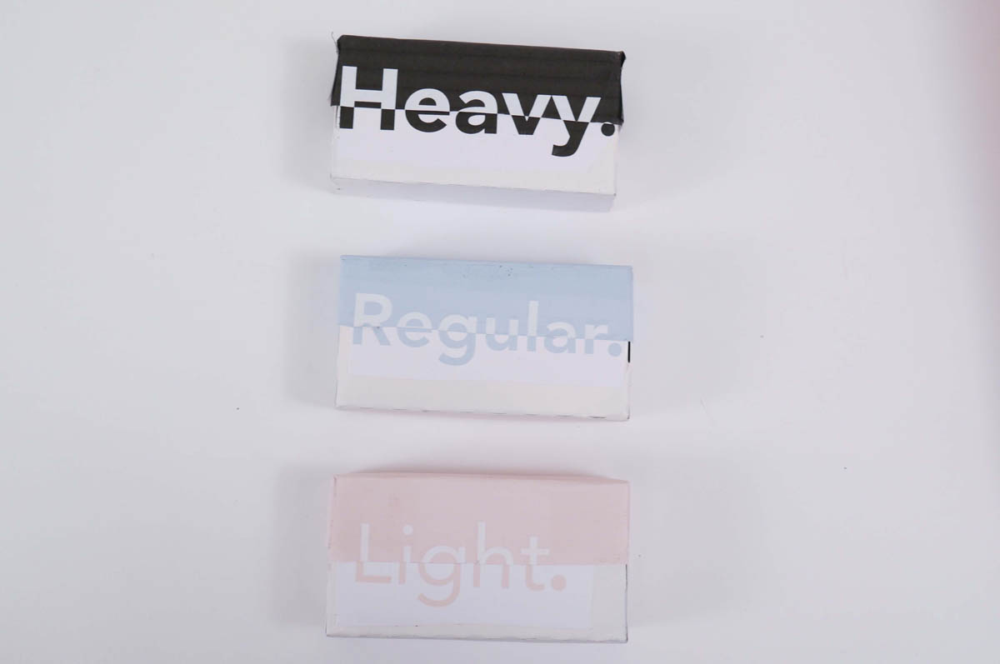

Normalize Periods
My Junior year, I was able to design for a cause I was very passionate about. I made packaging that promotes destigmatizing periods. I wanted to encourage people to not feel embarrassed about natural processes a body goes through. No one should feel embarrassed talking about periods or buying those products. I was asked to make packaging for tampons for a class project, and I got excited and made a whole period survival kit.


I made journals to accompany each period kit and made each one come with three different grades of tampons so the user could pick light, regular, or heavy based on where they were in their cycle. I also included wipes for their use.

I designed and bound journals to accompany each period kit.


The tampon boxes were color coded for clarity, with the darkest being for the heavy days and the lightest color for the lightest protection.
The tampon boxes also had symbols on the back to indicate what protection they would offer by showing how full a circle is.